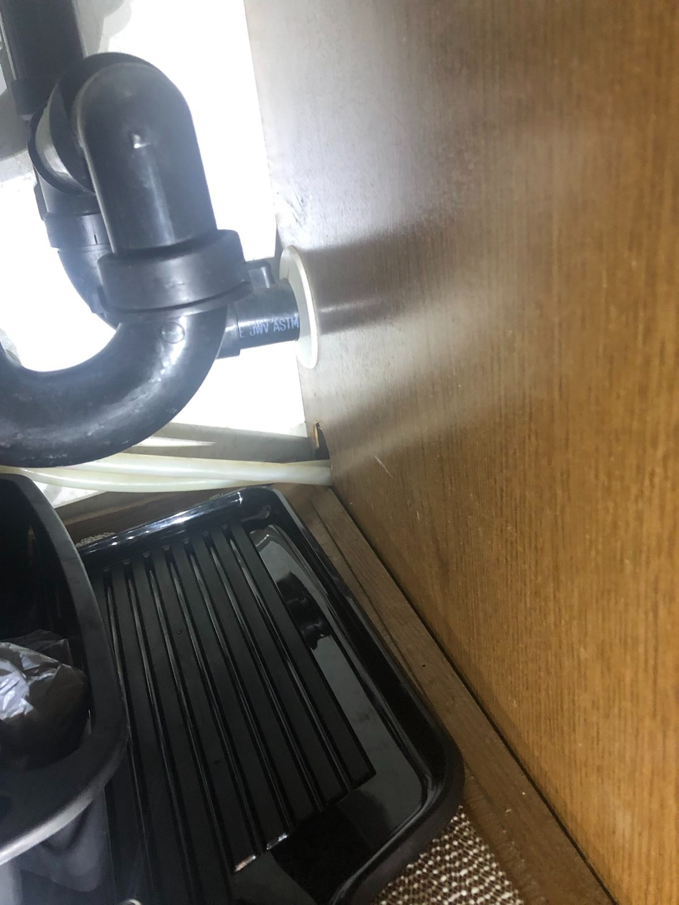

Plumbing
System overview
The System - To Troubleshoot the plumbing system. We need to understand how it works. When you look at the Driver's side of the RV in the back you will see two connectors. One for "City water" connection and one for a fresh water tank fill. With the Fresh water fill tank connection that will fill the fresh water tank on the RV. The City water connection by passes the fresh water tank and the water pump that is on board and just relies on the pressure coming into the RV and does NOT fill the fresh water tank. The system is a return less system where it feeds water to sink in the bathroom and the kitchen sink and the water heater under the kitchen sink. All of piping used is a pex like material. The system is designed to not have more than 60 psi in the lines at any given point. used water is collected in the gray tank from the sinks and the black tank for waste. both drain from the same point on the RV. Underneath the RV on the drivers side by the frame next to the generator on the driver side. Most of the plumbing is not accusable in the RV. If there is an issue with the water system in the RV. We will be looking at things from underneath the RV. We also need to go over how to winterize the RV if you are not going to use it during the winter in an non-insulated environment.
Water Heater and loop when using on board pump
The water heater is fairly small and only holds about 6 gallons of water. In an RV with a water heater it has a bypass valve so that when the RV is winterized. The coolant used to winterize the system does not get into the water heater. The pump is used to pressurize the system when a city water connection is not used. The plumbing runs just above the frame rails and comes into the RV at 2 points. One where the bathroom is and the other in the kitchen where the water heater is. These two connections are feed by 2 lines. that come from the fresh water tank and when the city connection is connected it by passes this section and ties in before the lines split off. The system is relatively simple but is not easily accessible. When most RV's are built. Maintenance is not at the forefront in the construction.